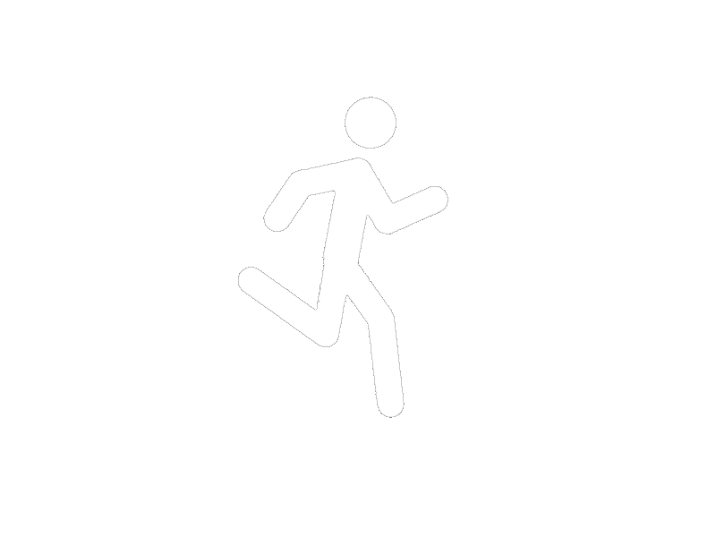

首頁
曝光金三角
常見格式
專有名詞介紹
成員介紹
快門 Shutter

快門速度（即曝光時間）是快門打開讓光線進入相機內的影像感應器的時間長度，亦能改變捕捉主體動作的方式。
快門速度以1秒、1/2秒、1/4秒……1/125秒至1/250秒等顯示。
較快的快門速度會縮短光線進入相機的時間，而較慢的快門速度則會加長這段時間。
在較快的快門速度下，您可以完全「凝住」移動物體的動作。相反，當您使用較慢的快門速度時，您便能令物體的移動方向變得模糊。
實作
返回